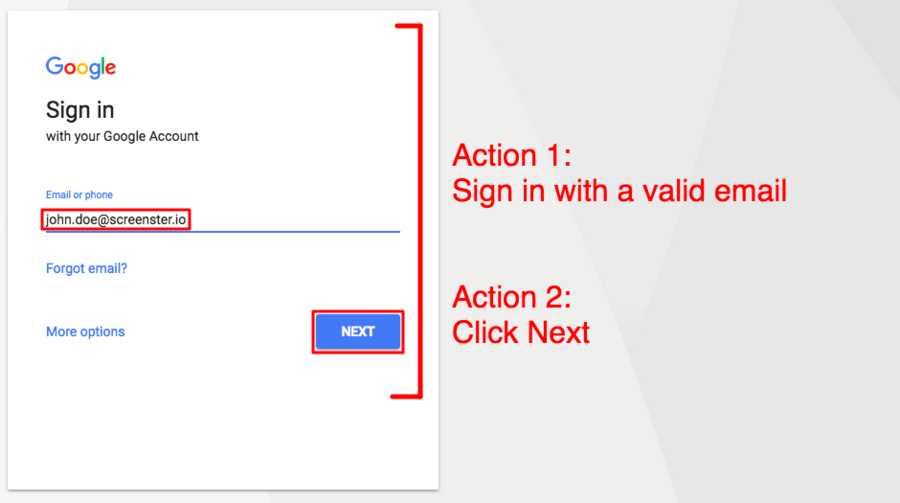
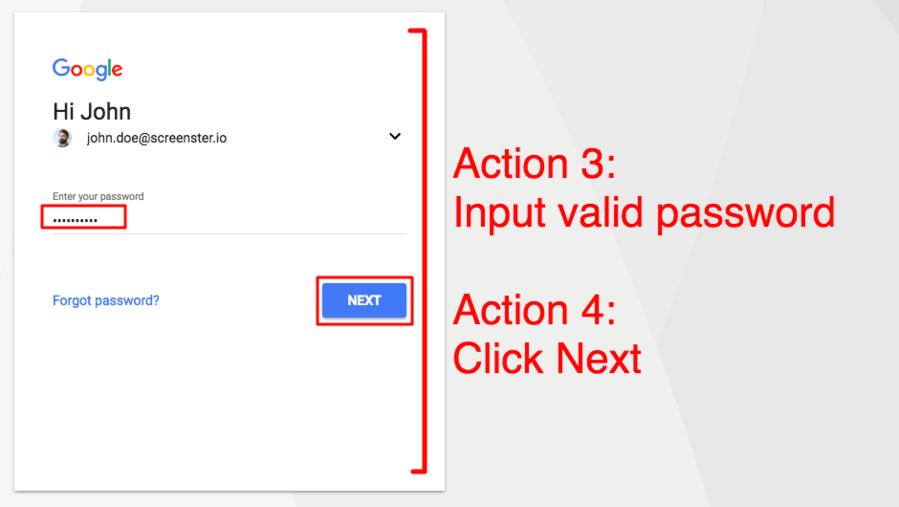

What is end-to-end testing?
October 3, 2017What is end-to-end testing?
End-to-end testing (e2e testing) is a software quality assurance methodology that targets “the flow of an application” functionality- and performance-wise. This methodology checks if an application performs as designed on all levels and across all subsystems. The scope of end-to-end testing encompasses the application in its entirety, as well as its integration with external interfaces and outside applications.
Okay, but doesn’t this ring a bell? Whenever someone talks about testing software in its entirety, doesn’t it make you think of system testing? As a matter of fact, novice testers tend to confuse end-to-end testing and system testing due to their seemingly similar scopes. This said, the two couldn’t be more different.
End-to-end testing versus system testing
Comparing end-to-end testing and system testing, the latter actually has a narrower focus. For this reason, it makes more sense to look at what system testing covers and proceed to what’s added in end-to-end testing.
| System Testing | End-to-End Testing |
| Validates the software system but doesn’t look outside of it. | Validates both the software system, all interconnected systems, and external interfaces. |
| Looks at system features (viewing each feature as a subsystem). | Looks at backend and hardware to cover all functionality that the user experiences when using an application |
| Follows integration testing. | Follows system testing. |
| Is easier to automate (though manual system testing is still a widespread practice). | Manual end-to-end testing is more common due to the need of dealing with external interfaces. |
Basically, system testing precedes end-to-end testing. It checks whether the functionality of the system meets the requirements, and it looks at how separate features interoperate as parts of a product.
With end-to-end testing, you step this up by testing the complete functionality of the product. You use real-world UX scenarios that involve interaction with databases, hardware, and networks. Doing this enables you to explore system dependencies of various origin and ensure correct operation and error-free data flow across subsystems and applications layers.
Okay, I guess all of this is beginning to sound too high-level at this point. So what exactly does an end-to-end test do? Looking at an example seems like the best way to explain…
End-to-end test example: signing in to Google
A complete end-to-end testing suite encompasses everything that a user can do with your application. A single test, in its turn, verifies a single functionality as perceived by the user.
Signing in to your Google account seems like a good example of an end-to-end test.
In the test below, the user will navigate through two pages and complete four interactions with the UI.
Page #1: Input valid email, click Next.

Page #2: Input valid password, click Next.

When testing these four steps, and end-to-end test will look at whether nothing prevents a user from successfully completing the interaction with the web app. This includes a whole bunch of things.
The forms and buttons need to actually appear on the page, and send the correct data to the server. The web application needs to process user actions and server responses correctly while maintaining the integrity of the UI. Finally, the sign-in menus should be accessible via the right URL, and completing the steps should redirect the user to another correct URL.
How to do end-to-end testing?
The columns in this table should serve as a starting point for QA teams planning out and performing end-to-end testing. Each case in end-to-end testing covers a single functionality, which is why tests reflect separate user-facing functions.
| 1. Building user functions → | 2. Building conditions → | 3. Test cases development |
| Listing features of all systems and subsystems | Listing conditions for each user function | Building test cases for each condition |
| Analysis of actions, input and output data | ||
| Analysis of nature and relations between user functions |
Seems clear and simple so far, right? It gets more challenging if we start talking about the automation of end-to-end testing.
End-to-end-testing automation
So what is it that makes QA teams struggle with automated end-to-end testing? Why in 2018, so many companies still rely on manual testing to get the job done?
Knowing about end-to-end testing best practices is great, but have you actually seen anyone follow them? There’s a huge difference between how teams of QAs should do end-to-end testing on paper and how they actually do it in real life. Let’s explore the challenges of end-to-end testing automation and the strategies companies use to overcome these challenges.
End-to-end testing on paper and in real life
On paper, product managers, requirements managers, and testers will compile detailed lists of conditions for every user function. On paper, QA automation teams will invest weeks into writing multiple tests for each feature of each system. In real life, no one has time for this.
Real-life end-to-end testing mostly boils down to manual testers reproducing *some* user stories. Sure, there are TDD and unit tests to rule out potentially critical issues at lower levels, which actually makes this “selective end-to-end testing” acceptable. But not everything gets caught! Depending on how solid your engineering and manual QAs are, the end users will see a few or a painful number of bugs. And the cycle repeats itself with each new release.
In the best case scenario, testers will also reuse suites of hand-coded functional and UI tests to automate happy paths at the system level. These are no substitute for automated end-to-end testing at full scale, but hey, that’s pretty much all you get with handwritten tests.
End-to-end testing example: Gmail
Manual or automated, end-to-end testing mostly reproduces how a user interacts with an application. A (somewhat simplified) case of an end-to-end test for Gmail will include following steps:
- Launching a browser instance.
- Using the browser address bar to type in the URL of the Gmail login page; waiting for the login page to load and open.
- Logging into Gmail account by typing the user credentials into the forms available on the page.
- Accessing the inbox and verifying that content and presentation are correct.
- Opening Read and Unread emails and verifying that content and presentation are correct.
- Logging out of Gmail.
Naturally, you can automate these steps with Selenium or other frameworks by focusing on separate elements in every UI state. You’d normally have similar test cases for other simple actions like reading, sending and receiving emails, reporting spam, etc. But doesn’t this look a bit like system testing?
Automated end-to-end testing, codeless style
Automation engineers are often sceptical about record-playback IDEs, which is partly justified. Old-school record-playback platforms of the 2000s were too cumbersome, and offered too little in the way of functionality. True, tools like Sahi or Ranorex spared you from having to handwrite tests. On the flip side, editing auto-generated code they produce is more painful than writing quality code from scratch.
Luckily, modern-day solutions don’t make you fumble through auto-generated code whenever you’re editing a test. The cloud-based automation platforms don’t depend on testers’ programming skills. Let’s see what our own product Screenster has to offer in the way of automated end-to-end testing.
Codeless end-to-end tests that work for real projects
Being a codeless solution, Screenster gives you the full power of WebDriver while abstracting away its complexity. Both test creation and test editing are carried out via a neat user-friendly dashboard, and the tool has a virtually non-existent learning curve.
Eliminating the need to hand-code your tests increases the productivity of automated end-to-end testing. With Screenster, a manual tester can automate an end-to-end test in under 3 minutes. Editing a test is just as fast and simple. Here’s how it works for a Gmail test similar to the one we’ve mentioned earlier:
Smart baselines with image, CSS, and content comparison
When recording a test, Screenster verifies every on-page element. It generates separate baselines for UI elements and content, and it captures the DOM structure of every UI component. When comparing visuals, the tool filters out visual noise with anti-aliasing, and captures the most minute layout shifts and visual bugs.
Self-healing tests with Smart locators
When analyzing the DOM structure of a UI, Screenster stores multiple locators for every element. In case of a change in the DOM structure or CSS breaks a locator, the platform automatically substitutes it with another one. By automatically restoring locators in this manner, the tool effectively reduces the time you need to spend on test maintenance.
Automatic timeouts for asynchronous events and server interaction
Communication with a server is integral to end-to-end testing, which makes text execution delays necessary. Instead of making you handcraft explicit and implicit waits, Screenster determines optimal wait time for every element. Again, this reduces the maintenance footprint of your test suites.
Simple collaboration
Like any other automation tool that belongs in 2017, Screenster is cloud-based. There’s a shared browser-based environment for the collaborative management of end-to-end testing suites, as well as a cloud server. This setup eliminates the need to instal and tinker with separate modules. Besides, you can opt for running your tests on a server installed on premise if this setup suits the nature of your project better.
CI support
Running tests in a continuous integration environment has become the default way of doing automated end-to-end testing. With the support for Jenkins, TeamCity, Travis, and Bamboo, Screenster meets the requirements of modern-day testing. CI support is implemented via a proprietary plugin that you can download from our website.
Bottom line: automated end-to-end testing done right
The scope of end-to-end testing poses a major challenge for test automation engineers,
Which is why having the right tool is so important. Screenster streamlines the automation of end-to-end testing to a point where it becomes cost-effective and simple enough for any company.
One way to see if Screenster can live up to this claim is to try our demo. Try to automate a simple test for your website and you’ll see that hand-coded tests are a thing of the past.
14 thoughts on “What is end-to-end testing?”